<!DOCTYPE html>
<html lang="en">
  <head>
    <meta charset="utf-8" />
    <meta name="viewport" content="width=device-width, initial-scale=1.0, maximum-scale=1.0, user-scalable=no" />

    <title>Product reformulation with endogenous unobservables</title>
    <link rel="stylesheet" href="dist/reveal.css" />
    <link rel="stylesheet" href="css/metropolis.css" id="theme" />
    <link rel="stylesheet" href="plugin/highlight/zenburn.css" />
	<link rel="stylesheet" href="css/layout.css" />
	<link rel="stylesheet" href="plugin/customcontrols/style.css">

	<link rel="stylesheet" href="plugin/reveal-pointer/pointer.css" />


    <script defer src="dist/fontawesome/all.min.js"></script>

	<script type="text/javascript">
		var forgetPop = true;
		function onPopState(event) {
			if(forgetPop){
				forgetPop = false;
			} else {
				parent.postMessage(event.target.location.href, "app://obsidian.md");
			}
        }
		window.onpopstate = onPopState;
		window.onmessage = event => {
			if(event.data == "reload"){
				window.document.location.reload();
			}
			forgetPop = true;
		}

		function fitElements(){
			const itemsToFit = document.getElementsByClassName('fitText');
			for (const item in itemsToFit) {
				if (Object.hasOwnProperty.call(itemsToFit, item)) {
					var element = itemsToFit[item];
					fitElement(element,1, 1000);
					element.classList.remove('fitText');
				}
			}
		}

		function fitElement(element, start, end){

			let size = (end + start) / 2;
			element.style.fontSize = `${size}px`;

			if(Math.abs(start - end) < 1){
				while(element.scrollHeight > element.offsetHeight){
					size--;
					element.style.fontSize = `${size}px`;
				}
				return;
			}

			if(element.scrollHeight > element.offsetHeight){
				fitElement(element, start, size);
			} else {
				fitElement(element, size, end);
			}		
		}


		document.onreadystatechange = () => {
			fitElements();
			if (document.readyState === 'complete') {
				if (window.location.href.indexOf("?export") != -1){
					parent.postMessage(event.target.location.href, "app://obsidian.md");
				}
				if (window.location.href.indexOf("print-pdf") != -1){
					let stateCheck = setInterval(() => {
						clearInterval(stateCheck);
						window.print();
					}, 250);
				}
			}
	};


        </script>
  </head>
  <body>
    <div class="reveal">
      <div class="slides"><section  data-markdown><script type="text/template"><!-- .slide: class="titleslide drop" -->
<div class="" style="position: absolute; left: 0px; top: 0px; height: 700px; width: 986.9999999999999px; min-height: 700px; display: flex; flex-direction: column; align-items: center; justify-content: center" absolute="true">

<div class="block">

# product reformulation with endogenous unobservables
Evidence from the UK's sugar levy on soft drinks
</div>


<div class="block">

## javier boncompte g.
### UCL & IFS PhD Research Scholar
### javier.boncompte.19@ucl.ac.uk

</div>

<!-- .element: class="author" -->

<div class="block">

### December 11, 2023
</div>

 <!-- .element: class="author" -->

	*Not for circulation - Work in Progress 
<!-- .element: style="text-align: center" -->
</div></script></section><section  data-markdown><script type="text/template"><!-- .slide: class="drop" -->
<div class="" style="position: absolute; left: 0px; top: 0px; height: 700px; width: 986.9999999999999px; min-height: 700px; display: flex; flex-direction: column; align-items: center; justify-content: center" absolute="true">

_Corrective Taxes_ have raised as an effective way to promote healthier consumption choices, particularly in the context of <mark>sugary drinks</mark>.  


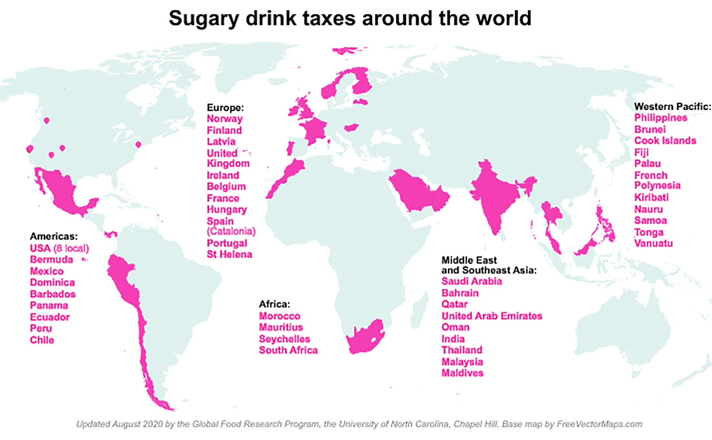
</div></script></section><section  data-markdown><script type="text/template"><!-- .slide: class="drop" -->
<div class="" style="position: absolute; left: 0px; top: 0px; height: 700px; width: 986.9999999999999px; min-height: 700px; display: flex; flex-direction: column; align-items: center; justify-content: center" absolute="true">

<div class="block">

# Why sugary drinks?

Beverages are one of the main sources of sugar intake, specially across the young and the poor. [Regular consumption of sugary drinks](http://hdl.handle.net/10986/33969) is linked to:
- Obesity
- Heart disease
- Diabetes
- Tooth decay
- Among other harmful effects
</div>


> Obesity and overweight costs up to <mark>£98 billions per year (4% GDP)</mark> (Bell *et al.* 2023).
</div>

<aside class="notes"><p>in reduced life expectancy and quality of life (64%), costs to the NHS (20%) and lost workplace productivity represent the rest (28%)</p>
</aside></script></section><section  data-markdown><script type="text/template"><!-- .slide: class="drop" -->
<div class="" style="position: absolute; left: 0px; top: 0px; height: 700px; width: 986.9999999999999px; min-height: 700px; display: flex; flex-direction: column; align-items: center; justify-content: center" absolute="true">

<split left="2" right="1" gap="1">

<div class="block">

# UK introduced a sugar tax in 2018

Volume-based instead of flat rate. 
	
- Three sugar concentration bands.

Extensively negotiated with the industry:
- 2012, firms make a voluntary pledge to cut sugars on their products.
- 2016, government announces a sugar-content tax on the industry with the Budget.
- 2018, the UK's Soft Drink Industry Levy gets implemented on April 6th, 2018.

</div>


<div class="block">

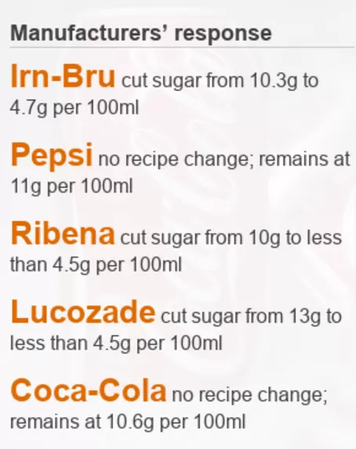

<small>[Source: BBC - Article from 06/04/2018](https://www.bbc.co.uk/news/health-43659124)</small>
</div>


</split>
</div></script></section><section  data-markdown><script type="text/template"><!-- .slide: class="drop" -->
<div class="" style="position: absolute; left: 0px; top: 0px; height: 700px; width: 986.9999999999999px; min-height: 700px; display: flex; flex-direction: column; align-items: center; justify-content: center" absolute="true">

<div class="block">

# This paper focuses on firms response 

Estimate a <mark>structural model of product reformulation</mark> that accounts for <mark>overlooked changes in the unobserved product characteristics</mark> to study:   
- What products get reformulated and why? 
- How does the reformulation affect markups?
- How those the policy interact with the market structure?

Unobservables include <mark>the taste and experience</mark> of a particular brand, but they can also include others things, like changes to the advertisement strategy.
</div>
</div></script></section><section  data-markdown><script type="text/template"><!-- .slide: class="drop" -->
<div class="" style="position: absolute; left: 0px; top: 0px; height: 700px; width: 986.9999999999999px; min-height: 700px; display: flex; flex-direction: column; align-items: center; justify-content: center" absolute="true">

<div class="block">

# Literature <small>(selection)</small>

## product introduction and reformulation 
Draganska et al. (2009); Crawford (2012); Fan (2013); Sweeting (2013); Eizenberg (2014);  Veiga & Weyl (2016); Sullivan (2017); Wollmann (2018); Crawford et al. (2019) 


## demand estimation with endogenous unobservables
Spence (1976); Bajari & Benkard (2005); Veiga & Weyl (2016); Petrin et al. (2022)


## corrective food policies and supply side responses
Ippolito & Mathios (1990, 1995); Griffith et al. (2017); Grogger (2017); Allcott _et al._ (2019); Griffith et al. (2019); Dubois et al. (2020);   Villas-Boas _et al._ (2020); Abi-Rafeh et al. (2023); O’Connell & Smith. (2023) Barahona et al. (2023); 


</div>
</div></script></section><section  data-markdown><script type="text/template"><!-- .slide: class="drop" -->
<div class="" style="position: absolute; left: 0px; top: 0px; height: 700px; width: 986.9999999999999px; min-height: 700px; display: flex; flex-direction: column; align-items: center; justify-content: center" absolute="true">

# Data
</div></script></section><section  data-markdown><script type="text/template"><!-- .slide: class="drop" -->
<div class="" style="position: absolute; left: 0px; top: 0px; height: 700px; width: 986.9999999999999px; min-height: 700px; display: flex; flex-direction: column; align-items: center; justify-content: center" absolute="true">

<div class="block">

# Kantar Worldpanel survey 

A commercial household consumption panel where participants employ hand-held scanners to scan all purchases brought into their home.
- Focused on fast-paced consumer goods
- ~35.000 households across the UK.
- Data available for +15 years _(using only 10)_.
- Non pecuniary incentives.
- Additional information available on:
	- Household demographics 
	- Product nutritional values	
</div>
</div></script></section><section  data-markdown><script type="text/template"><!-- .slide: class="drop" -->
<div class="" style="position: absolute; left: 0px; top: 0px; height: 700px; width: 986.9999999999999px; min-height: 700px; display: flex; flex-direction: column; align-items: center; justify-content: center" absolute="true">

<div class="block">

# Fact #1: The policy reduced sugar consumption

<split even>
<div class="block">

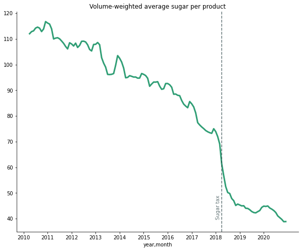

<mark>**Sugars: -60%** aprox</mark>
</div>


<div class="block">

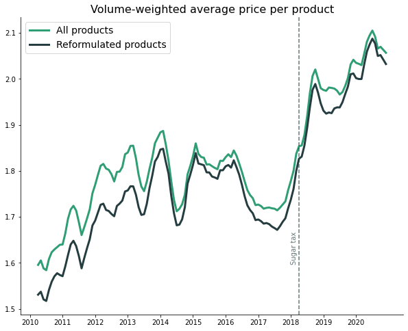

<mark>**Prices: +10%** aprox</mark>
</div>


</split>

</div>
</div></script></section><section  data-markdown><script type="text/template"><!-- .slide: class="drop" -->
<div class="" style="position: absolute; left: 0px; top: 0px; height: 700px; width: 986.9999999999999px; min-height: 700px; display: flex; flex-direction: column; align-items: center; justify-content: center" absolute="true">

<div class="block">

# Fact #2: Firms adjusted their product portfolios

<split even>
<div class="block">

Acting in anticipation to the policy, firms:
- Introduced new products.
- Removed existing ones.
- Reformulated others.

_After the tax, products' sugar-content clusters below the tax thresholds._
</div>


<div class="block">

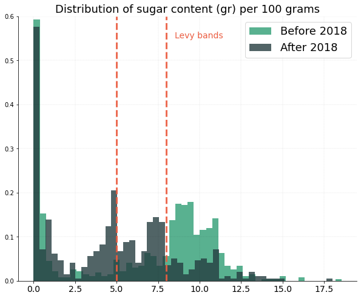

</div>


</split>

</div>
</div></script></section><section  data-markdown><script type="text/template"><!-- .slide: class="drop" -->
<div class="" style="position: absolute; left: 0px; top: 0px; height: 700px; width: 986.9999999999999px; min-height: 700px; display: flex; flex-direction: column; align-items: center; justify-content: center" absolute="true">

# Fact #3: Newcomers made many of these changes

Most of the increase in the number of products is due to newcomer firms.

<split even>

<div class="block">

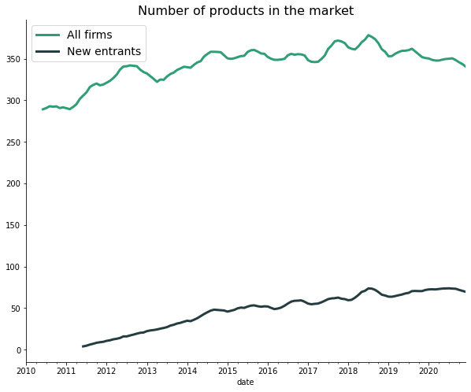

</div>


<div class="block">

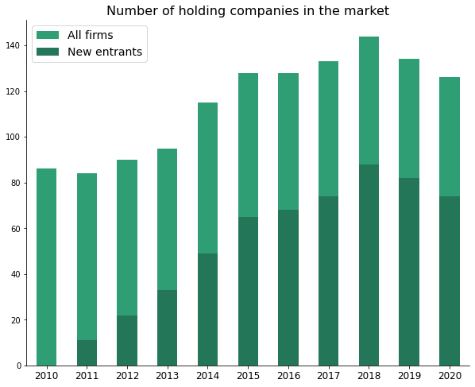

</div>


</split>
</div></script></section><section  data-markdown><script type="text/template"><!-- .slide: class="drop" -->
<div class="" style="position: absolute; left: 0px; top: 0px; height: 700px; width: 986.9999999999999px; min-height: 700px; display: flex; flex-direction: column; align-items: center; justify-content: center" absolute="true">

# Fact #4: The industry structure also changed


<div class="block">

<split left=1 right=4>

Mergers & Acquisitions

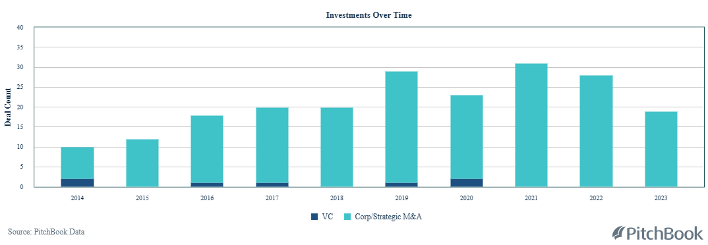

</split>

<split left=1 right=4>

Deals total value

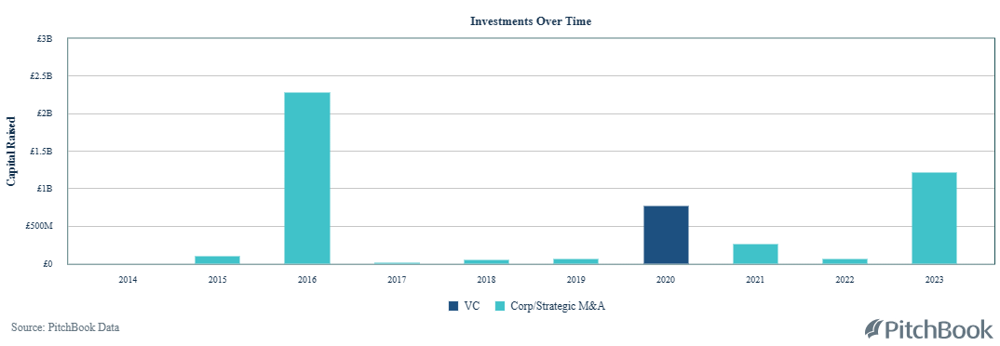

</split>

</div>
</div>

<aside class="notes"><p>In 2016 SABMiller was acquired by the american Anheuser-Busch InBev for USD$79 billion.</p>
</aside></script></section><section  data-markdown><script type="text/template"><!-- .slide: class="drop" -->
<div class="" style="position: absolute; left: 0px; top: 0px; height: 700px; width: 986.9999999999999px; min-height: 700px; display: flex; flex-direction: column; align-items: center; justify-content: center" absolute="true">

# In a nutshell
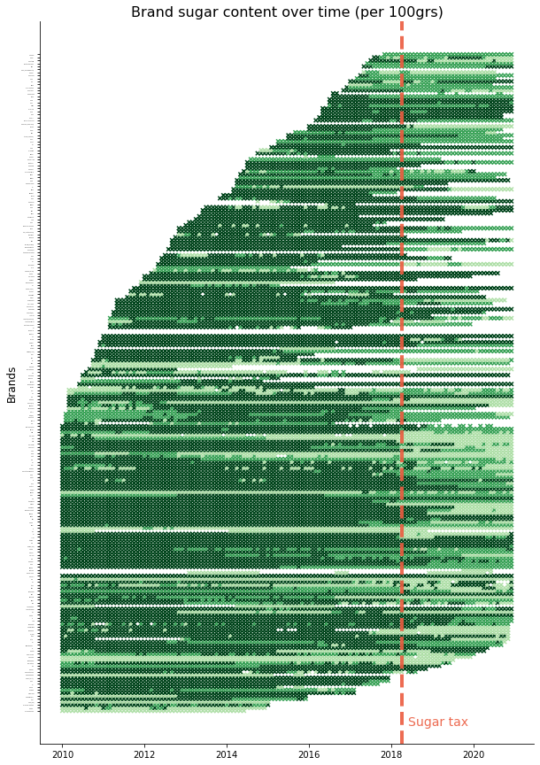
</div></script></section><section  data-markdown><script type="text/template"><!-- .slide: class="drop" -->
<div class="" style="position: absolute; left: 0px; top: 0px; height: 700px; width: 986.9999999999999px; min-height: 700px; display: flex; flex-direction: column; align-items: center; justify-content: center" absolute="true">

# What are we missing?

- <mark>What other changes are firms introducing to their products?</mark>
- How does reformulation affect costs and pass-throughs?
- How does reformulation affect policy outcomes?
- How does the policy affect merger incentives?
</div></script></section><section  data-markdown><script type="text/template"><!-- .slide: class="drop" -->
<div class="" style="position: absolute; left: 0px; top: 0px; height: 700px; width: 986.9999999999999px; min-height: 700px; display: flex; flex-direction: column; align-items: center; justify-content: center" absolute="true">

# Model
Product reformulation with endogenous unobservables
</div></script></section><section  data-markdown><script type="text/template"><!-- .slide: class="drop" -->
<div class="" style="position: absolute; left: 0px; top: 0px; height: 700px; width: 986.9999999999999px; min-height: 700px; display: flex; flex-direction: column; align-items: center; justify-content: center" absolute="true">

<div class="block">

## random coefficients demand model
Heterogenous preferences over the observed `$(x_j, p_j)$` and unobserved `$(f_j)$` characteristics. 

Following Berry *et al.* (BLP; 1995), I rewrite individual’s utility in terms of the average utility of product j on market t `$(\delta_{jt})$`.
</div>


`$U(i,j,t) = \underset{\delta_{jt}}{\underbrace{(\beta_t \cdot x_j+\lambda_t \cdot f_j+e_{jt})}} + \tilde{\beta}_i \cdot p_j + \epsilon_{ijt}$` 

with `$\beta_t=\beta+\beta_w \cdot w_t$` and `$\tilde{\beta}_i \sim N(0, \Sigma)$`
</div></script></section><section  data-markdown><script type="text/template"><!-- .slide: class="drop" -->
<div class="" style="position: absolute; left: 0px; top: 0px; height: 700px; width: 986.9999999999999px; min-height: 700px; display: flex; flex-direction: column; align-items: center; justify-content: center" absolute="true">

Market shares are obtained by aggregating individual choice probabilities.

$
s_{jt}(\delta_{jt}, \delta_{-jt},\Sigma)
=
\displaystyle\int
\frac
{e^{\delta_{jt}+\tilde{\beta}_i p_j}}
{
	1+\sum\limits\_{k\in J_t} 
		 e^{
			 \delta\_{kt} + \tilde{\beta}\_{i} p\_{kt}
		 }
}
\\, d\tilde{\beta}\_{i}
$

Conditional on `$\Sigma$`, there is a one-to-one mapping between `$s_{jt}$` and `$\delta_{jt}$` derived from solving the set of non-linear equations above (Berry et al., 1995; 2013).
</div></script></section><section  data-markdown><script type="text/template"><!-- .slide: class="drop" -->
<div class="" style="position: absolute; left: 0px; top: 0px; height: 700px; width: 986.9999999999999px; min-height: 700px; display: flex; flex-direction: column; align-items: center; justify-content: center" absolute="true">

### The unobserved utility effect as a factor model

I allow arbitrary correlation between the utility of unobserved and observed product characteristics using <mark>Interactive Fixed Effects (IFE)</mark>. 

$
\xi_{jt} = \delta_{jt} - \beta_t \cdot x_j = \lambda_t \cdot f_j+e_{jt}
$ 
with 
$
E[\xi_{jt}|x_j] \neq 0
$

Moon et al. (2018) show `$\lambda_t * f_j=\left[\begin{array}{lll}\lambda_tf_j& \ldots & \lambda_t^{R} f_j^R\end{array}\right]$` can be jointly identified using only aggregated data on: market shares, some product characteristics `$\left(x_j\right)$`, and demand instruments `$\left(z_{j t}\right)$`.
</div></script></section><section  data-markdown><script type="text/template"><!-- .slide: class="drop" -->
<div class="" style="position: absolute; left: 0px; top: 0px; height: 700px; width: 986.9999999999999px; min-height: 700px; display: flex; flex-direction: column; align-items: center; justify-content: center" absolute="true">

<div class="block">

<mark>Joint identification is not enough</mark> for welfare calculations of reformulation because Interactive Fixed Effects models are weakly identified:

- Only upon scaling & rotations: `$\Lambda F = (\Lambda H^{-1})(HF)$`. 
- Relies in arbitrary regularization conditions:
	- Orthonormal factors: `$F^\prime F=\mathbb{I}_J$`
	- Orthogonal loadings: `$\Lambda^\prime \Lambda$` diagonal

This gives them ambiguous, even inconsistent, economic interpretation: Can't differentiate changes to preferences from product changes. 
</div>
</div></script></section><section  data-markdown><script type="text/template"><!-- .slide: class="drop" -->
<div class="" style="position: absolute; left: 0px; top: 0px; height: 700px; width: 986.9999999999999px; min-height: 700px; display: flex; flex-direction: column; align-items: center; justify-content: center" absolute="true">

I address these limitations by replacing the standard regularizations with moment conditions derived from a model of firms' product choices. 

## firms problem: a two-stage game

$
\underset{N_{ft}, \\{x_j,f_j\\}  }{\max}
\\,
\underset{\\{p_{ft}\\}}{\max}	
\\,
\Pi_{ft}=\sum\limits_{j\in J_{ft}}(p_j-c_j)s_j(\cdot)-m(N_{ft})
$

<div class="block">

**Stage 1:** Firms define  their products simultaneously facing a <mark>menu size cost</mark>.

**Stage 2:** Determine prices after observing all competiting products. 
</div>
</div></script></section><section  data-markdown><script type="text/template"><!-- .slide: class="drop" -->
<div class="" style="position: absolute; left: 0px; top: 0px; height: 700px; width: 986.9999999999999px; min-height: 700px; display: flex; flex-direction: column; align-items: center; justify-content: center" absolute="true">

### Why focus only on the current period profits? (Static)

<div class="block">

Low frictions to product reformulation allow firms to focus on the present:
- Low development costs _(relative to sales)_.
- High reaction capacity to introduce or remove products. 

These <mark>assumptions are suitable for fast-moving goods, like soft drinks</mark>, but not for tech or industrial goods - where development costs are higher relative to sales.

</div>
</div></script></section><section  data-markdown><script type="text/template"><!-- .slide: class="drop" -->
<div class="" style="position: absolute; left: 0px; top: 0px; height: 700px; width: 986.9999999999999px; min-height: 700px; display: flex; flex-direction: column; align-items: center; justify-content: center" absolute="true">

# Identification
</div></script></section><section  data-markdown><script type="text/template"><!-- .slide: class="drop" -->
<div class="" style="position: absolute; left: 0px; top: 0px; height: 700px; width: 986.9999999999999px; min-height: 700px; display: flex; flex-direction: column; align-items: center; justify-content: center" absolute="true">

# Identification assumptions

The model preserves the main identification argument in Moon _et al._ (2018). In consequence, the model assumes their same conditions hold:

1. The second moments of `$δ(S|Σ,λ),X$` and `$Z$` exists for all `$Σ,λ,j,t$`.
2. `$E_0 [e_{jt} ]=0$`.
3. `$E_0 [X_{jt} \epsilon_{jt} ]=0$` and `$E_0 [Z_{jt} \epsilon_{jt} ]=0$` for all `$j$` and `$t$`.
4. `$E_0 [(X,Z)^′ (I-f_0^′ (f_0^′ f_0 )^{-1} f_0 )(X,Z)]≥b$` for some `$b>0$`.
	- **Generalized Non-Collinearity condition**
5. `$E_0 [Δξ′(Σ,f,β)(X,Z)] E_0 [(X,Z)^′ (X,Z)]^{-1} E_0 [(X,Z)^′ Δξ(Σ,f,β)]$` is strictly greater than `$E_0 Tr([Δξ(Σ,f,β)]^′ P_((λ_0,λ)) [Δξ(Σ,f,β)])$`
	- **Generalized Relevance Condition**
</div>

<aside class="notes"><ol start="4">
<li>means the norm of projection of the observables into the unobserved factors is not 
 5) means</li>
</ol>
</aside></script></section><section  data-markdown><script type="text/template"><!-- .slide: class="drop" id="IdentificationSlide" -->
<div class="" style="position: absolute; left: 0px; top: 0px; height: 700px; width: 986.9999999999999px; min-height: 700px; display: flex; flex-direction: column; align-items: center; justify-content: center" absolute="true">

<div class="block">

# Identification _(sketch)_

Then, it can be shown that:  

1. The conditional factor model is identified.

`$\delta_{jt}(\Sigma) = (\beta + \beta_w \cdot w_t) \cdot x_j + \lambda_t \cdot f_j + \gamma \cdot z_{jt}+\epsilon_{jt}$` (Bai. 2009; Moon & Weidner, 2015)


2.  `$\Sigma$` can be identified using the exclusion restriction.

`$\mathbb{E}[\delta_{jt} \cdot z_{jt}|x_j,f_j]=0\leftrightarrow \gamma_0 = 0$`
(Moon _et al._ 2018)
</div>


Therefore, we can first identify `$\Sigma_0$` by finding the value that makes `$\hat{\gamma}=0$`.  Then use this value to identify the other parameters conditional on `$\Sigma_0$` by solving the factor model without the auxiliary regressors. <mark>_([Proof](#IdentificationProof))_</mark>
</div></script></section><section  data-markdown><script type="text/template"><!-- .slide: class="drop" -->
<div class="" style="position: absolute; left: 0px; top: 0px; height: 700px; width: 986.9999999999999px; min-height: 700px; display: flex; flex-direction: column; align-items: center; justify-content: center" absolute="true">

# Estimation
</div></script></section><section  data-markdown><script type="text/template"><!-- .slide: class="drop" -->
<div class="" style="position: absolute; left: 0px; top: 0px; height: 700px; width: 986.9999999999999px; min-height: 700px; display: flex; flex-direction: column; align-items: center; justify-content: center" absolute="true">

## non-linear factor model with unbalanced panel

This is known as the <mark>Minimum Distance - Least Square</mark> estimator presented in Moon _et al._ (2018).

$
\underset{\Sigma}{\min}
\\,
\underset{\gamma}{\arg} 
\underset{\beta, \beta_w, \gamma, \lambda, f}{\min}	
\\,
\mathbb{E}\left[
	(\delta(\Sigma) - (\beta + \beta_w \cdot w_t) \cdot x_j - \lambda_t \cdot f_j - \gamma \cdot z_{jt})^{2}
\right]
$

Adapted to unbalanced panels using Norkutė *et al.* (2021) and Kripfganz & Sarafidis (2021) to account for the entry & exit patterns in the data.
</div></script></section><section  data-markdown><script type="text/template"><!-- .slide: class="drop" -->
<div class="" style="position: absolute; left: 0px; top: 0px; height: 700px; width: 986.9999999999999px; min-height: 700px; display: flex; flex-direction: column; align-items: center; justify-content: center" absolute="true">

# How many factors to use?

I propose three criteria to choose the number of missing factors:
- **Prior knowledge:** <br>Use industry knowledge to determine missing dimensions.
- **Econometric:** <br>Use the _elbow criteria_ to minimize the unexplained variance.
- <mark>**Economic:** <br>Solve the endogeneity problem that raises need for factors.</mark>

`$\hat\beta^{(R+1)} = \hat\beta^{(R)}$`
</div></script></section><section  data-markdown><script type="text/template"><!-- .slide: class="drop" -->
<div class="" style="position: absolute; left: 0px; top: 0px; height: 700px; width: 986.9999999999999px; min-height: 700px; display: flex; flex-direction: column; align-items: center; justify-content: center" absolute="true">

## demand instruments


A <mark>simultaneity problem emerges when assuming jointly defined characteristics</mark>. Hence, <mark>BLP like instruments become invalid</mark>.

Therefore, inspired by Fan (2013), I use high-frequency proxies of _"other-market regional characteristics"_. 

<div class="block">

- Weather: Temperature and Rainfall (MET Office).
- House prices: House price indexes (ONS). 
</div>
</div></script></section><section  data-markdown><script type="text/template"><!-- .slide: class="drop" -->
<div class="" style="position: absolute; left: 0px; top: 0px; height: 700px; width: 986.9999999999999px; min-height: 700px; display: flex; flex-direction: column; align-items: center; justify-content: center" absolute="true">

# Results
</div></script></section><section  data-markdown><script type="text/template"><!-- .slide: class="drop" -->
<div class="" style="position: absolute; left: 0px; top: 0px; height: 700px; width: 986.9999999999999px; min-height: 700px; display: flex; flex-direction: column; align-items: center; justify-content: center" absolute="true">

# Benchmark: Monte-Carlo simulation

To illustrate the necessity of accounting for endogenous unobservables when estimating from aggregated market data, I undertake the following steps:

<split left=2 right=1 gap=1>
<div class="block">

1. Randomly generate products with exogenous characteristics.
2. Create a new variable correlated with the characteristics _(price)_.
3. Randomly simulate the entry & exit of products.
4. Simulate individual choices and compute market shares.
6. Recover simulation coefficients using BLP, <mark>deliberately omitting some product characteristics</mark> _(unobservables)_.
</div>


<div class="block">

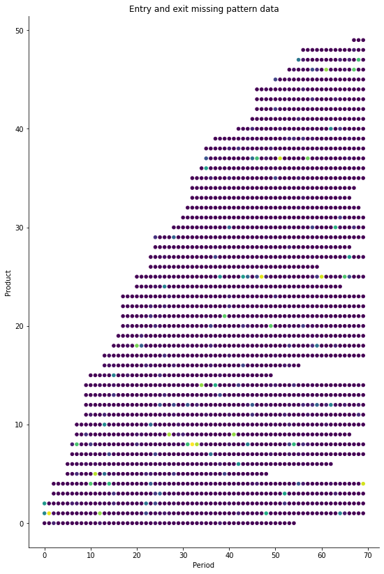

</div>

<!-- .element: style="text-align: center" -->
</split>
</div></script></section><section  data-markdown><script type="text/template"><!-- .slide: class="drop" -->
<div class="" style="position: absolute; left: 0px; top: 0px; height: 700px; width: 986.9999999999999px; min-height: 700px; display: flex; flex-direction: column; align-items: center; justify-content: center" absolute="true">

# Simulation: Estimation results

||True|BLP|<mark>LSMD</mark>|BLP Bias (%)|<mark>LSMD Bias (%)</mark>|
|---|---|---|---|---|---|
|prices|2.0|-0.1128|<mark>2.4678</mark>|-105.64|<mark>23.39</mark>|
|x2|1.0|0.7065|<mark>0.8936</mark>|-29.35|<mark>-10.64</mark>|

The <mark>LSMD estimator effectively recovers the coefficients</mark> with less bias.
</div></script></section><section  data-markdown><script type="text/template"><!-- .slide: class="drop" -->
<div class="" style="position: absolute; left: 0px; top: 0px; height: 700px; width: 986.9999999999999px; min-height: 700px; display: flex; flex-direction: column; align-items: center; justify-content: center" absolute="true">

<div class="block">

# Expected result: Change in coefficient estimates

Using a different approach, [Petrin *et al.* (2022, NBER WP)](https://www-nber-org/papers/w30778) <mark>reassess the original BLP (1995)</mark> results to account for endogenous unobservables, finding:

- _+31% increase_ average in <mark>price elasticities</mark>.
- _-22% fall_ in average <mark>markups</mark>.
- <mark>Fixes parameter inconsistency</mark> on efficiency. 
- Helps explain the <mark>elasticity of the outside option</mark>. 

<p><br></p>

## the key lies in the correlation between observed and unobserved characteristics.
  
For example, <mark>assuming taste is the only unobservable</mark>, a positive correlation with sugar content would likely lead to a lower coefficient estimates for sugar content. 

</div>
</div></script></section><section  data-markdown><script type="text/template"><!-- .slide: class="drop" -->
<div class="" style="position: absolute; left: 0px; top: 0px; height: 700px; width: 986.9999999999999px; min-height: 700px; display: flex; flex-direction: column; align-items: center; justify-content: center" absolute="true">

# Conclusion: Reformulation must account for unobservables

Product reformulation plays an important role for the policy outcomes of corrective taxes and other food related policies. 

Firms know all their products' characteristics, irrespective of the analyst's ability to observe them.

This paper present a structural model that accounts for unobserved changes in product characteristics by combining factor models and moments derived from economic theory to get identification.
</div></script></section><section  data-markdown><script type="text/template"><!-- .slide: class="titleslide drop" -->
<div class="" style="position: absolute; left: 0px; top: 0px; height: 700px; width: 986.9999999999999px; min-height: 700px; display: flex; flex-direction: column; align-items: center; justify-content: center" absolute="true">

<div class="block">

# product reformulation with endogenous unobservables
Evidence from the UK's sugar levy on soft drinks
</div>


<div class="block">

## javier boncompte g.
### UCL & IFS PhD Research Scholar
### javier.boncompte.19@ucl.ac.uk

</div>

<!-- .element: class="author" -->

<div class="block">

### December 11, 2023
</div>

 <!-- .element: class="author" -->

	*Not for circulation - Work in Progress 
<!-- .element: style="text-align: center" -->
</div></script></section><section  data-markdown><script type="text/template"><!-- .slide: class="drop" -->
<div class="" style="position: absolute; left: 0px; top: 0px; height: 700px; width: 986.9999999999999px; min-height: 700px; display: flex; flex-direction: column; align-items: center; justify-content: center" absolute="true">

# Annex
</div></script></section><section  data-markdown><script type="text/template"><!-- .slide: class="drop" id="IdentificationProof" -->
<div class="" style="position: absolute; left: 0px; top: 0px; height: 700px; width: 986.9999999999999px; min-height: 700px; display: flex; flex-direction: column; align-items: center; justify-content: center" absolute="true">

# [Identification (I)](#IdentificationSlide)

<div class="block">

I show the model is fully identified by establishing a unique mapping between the distribution of observables and the true model parameters in three steps:

1.Use the instruments `$(z_jt)$` to find the true Σ.

2.Conditional on `$Σ_0$`, identify the consumer preferences β and `$λ_t∗f_j$`.

3.Conditional on `$Σ_0,β_0,λ_0∗f_0$`, use the supply side moments to find `$F$` and `$Λ$`.

I assume the true number of factors `$(R)$` is known; Moon & Weidner (2015) look at the case when this is unknown.

</div>
</div></script></section><section  data-markdown><script type="text/template"><!-- .slide: class="drop" -->
<div class="" style="position: absolute; left: 0px; top: 0px; height: 700px; width: 986.9999999999999px; min-height: 700px; display: flex; flex-direction: column; align-items: center; justify-content: center" absolute="true">

## THEOREM 3.1: IDENTIFICATION

Under assumptions (i)-(v), no two sets of parameters can be observationally equivalent. Thus, there is a unique mapping between the distribution of observables and the true model parameters.
</div></script></section></div>
    </div>

    <script src="dist/reveal.js"></script>

    <script src="plugin/markdown/markdown.js"></script>
    <script src="plugin/highlight/highlight.js"></script>
    <script src="plugin/zoom/zoom.js"></script>
    <script src="plugin/notes/notes.js"></script>
    <script src="plugin/math/math.js"></script>
	<script src="plugin/mermaid/mermaid.js"></script>
	<script src="plugin/chart/chart.min.js"></script>
	<script src="plugin/chart/plugin.js"></script>
	<script src="plugin/customcontrols/plugin.js"></script>
	<script src="plugin/reveal-pointer/pointer.js"></script>

    <script>
      function extend() {
        var target = {};
        for (var i = 0; i < arguments.length; i++) {
          var source = arguments[i];
          for (var key in source) {
            if (source.hasOwnProperty(key)) {
              target[key] = source[key];
            }
          }
        }
        return target;
      }

	  function isLight(color) {
		let hex = color.replace('#', '');

		// convert #fff => #ffffff
		if(hex.length == 3){
			hex = `${hex[0]}${hex[0]}${hex[1]}${hex[1]}${hex[2]}${hex[2]}`;
		}

		const c_r = parseInt(hex.substr(0, 2), 16);
		const c_g = parseInt(hex.substr(2, 2), 16);
		const c_b = parseInt(hex.substr(4, 2), 16);
		const brightness = ((c_r * 299) + (c_g * 587) + (c_b * 114)) / 1000;
		return brightness > 155;
	}

	var bgColor = getComputedStyle(document.documentElement).getPropertyValue('--r-background-color').trim();
	var isLight = isLight(bgColor);

	if(isLight){
		document.body.classList.add('has-light-background');
	} else {
		document.body.classList.add('has-dark-background');
	}

      // default options to init reveal.js
      var defaultOptions = {
        controls: true,
        progress: true,
        history: true,
        center: true,
        transition: 'default', // none/fade/slide/convex/concave/zoom
        plugins: [
          RevealMarkdown,
          RevealHighlight,
          RevealZoom,
          RevealNotes,
          RevealMath.MathJax3,
		  RevealMermaid,
		  RevealChart,
		  RevealCustomControls,
	      RevealPointer,
        ],


    	allottedTime: 120 * 1000,

		mathjax3: {
			mathjax: 'plugin/math/mathjax/tex-mml-chtml.js',
		},
		markdown: {
		  gfm: true,
		  mangle: true,
		  pedantic: false,
		  smartLists: false,
		  smartypants: false,
		},

		mermaid: {
			theme: isLight ? 'default' : 'dark',
		},

		customcontrols: {
			controls: [
			]
		},
      };

      // options from URL query string
      var queryOptions = Reveal().getQueryHash() || {};

      var options = extend(defaultOptions, {"width":"987","height":"700","margin":0.04,"controls":true,"progress":true,"slideNumber":true,"transition":"slide","transitionSpeed":"default"}, queryOptions);
    </script>

    <script>
      Reveal.initialize(options);
    </script>
  </body>

  <!-- created with Advanced Slides -->
</html>
